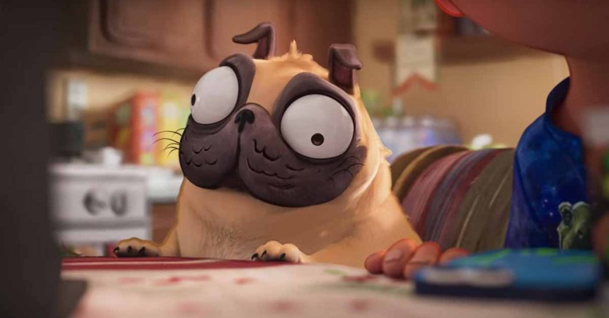

Nombre común: Perro
Nombre científico: Canis lupus familiaris
Clase: Mamífero
Vida media: 10 a 15 años
Tamaño: Varía según la raza
Peso: De 1 kg a más de 90 kg dependiendo de la raza

El perro es un animal doméstico conocido por su lealtad e inteligencia. Existen muchas razas con diferentes tamaños, colores y comportamientos. Es considerado el mejor amigo del ser humano.
Es un animal omnívoro. Su alimentación puede incluir croquetas, carne, vegetales y alimentos especiales según su edad y tamaño.